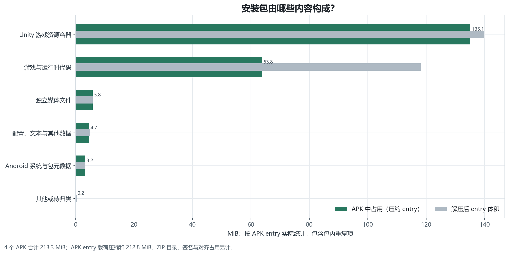
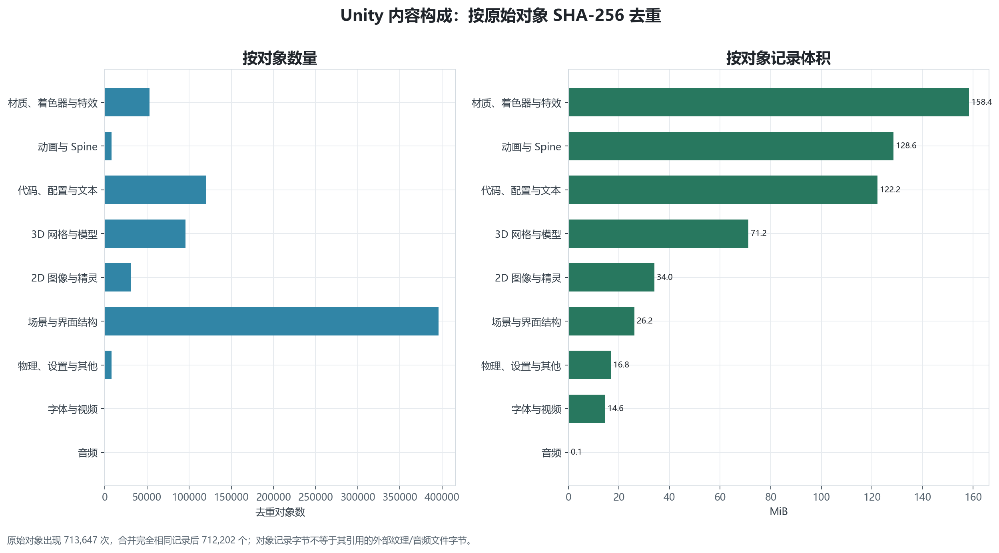
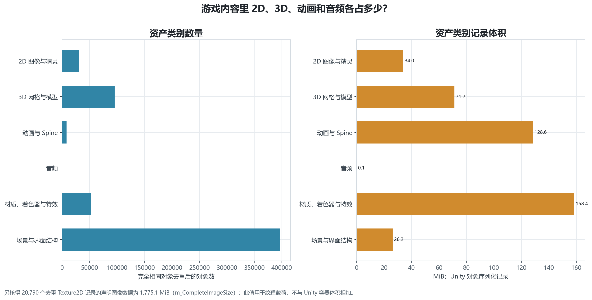
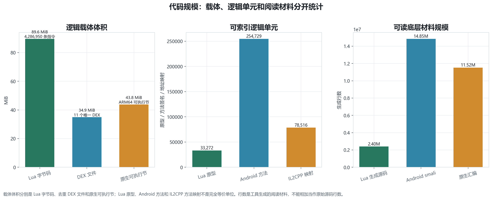
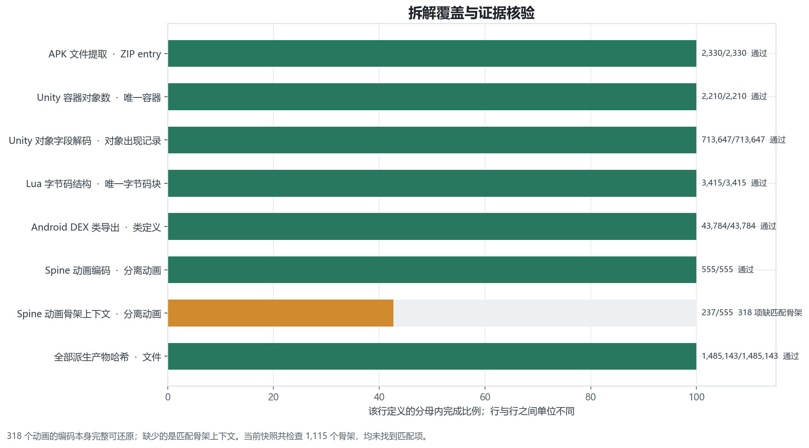

Gossip Harbor 3.98.10：资源与代码规模
统计快照：四个 APK 与已记录远端 catalog。内容精确哈希去重；实际安装体积另按 APK entry 统计。
阅读口径：包体压缩占用、Unity 对象记录大小、纹理载荷、代码单元和生成阅读材料分别统计。嵌套容器与内部对象不相加，跨语言行数不合并。
APK 包体构成
按实际 APK entry 压缩体积统计，重复项保留以反映安装包占用；灰色短条表示解压后体积。

Unity 对象构成
按对象原始字节 SHA-256 去重。对象出现记录 713,647 次，合并后 712,202 个。

2D、3D、动画与音频
纹理载荷另由 Texture2D 的 m_CompleteImageSize 汇总为 1,775.1 MiB；其他项目显示对象记录大小。

代码规模
载体体积、代码单元数和反编译阅读材料分别展示；单位不等价，行数不合并。

覆盖与验收证据
每行独立分母，动画编码读取与骨架上下文分开验收。

统计边界
- APK entry 压缩占用包含包内重复项，用于反映实际 APK 内容；哈希去重指标另报。
- Unity 对象大小是序列化记录大小；Texture2D 另用 m_CompleteImageSize 统计图像载荷。
- Unity 容器包含其内部对象，容器体积与对象体积不可相加。
- Lua/Java/smali/汇编行数均为工具生成阅读材料，不是原始源码行数，也不跨语言相加。
- 去重只合并可证明字节完全相同的内容，不把相似实现或语义相同配置擅自合并。
- 统计范围是当前 3.98.10 四个 APK 与记录的 2026-09-22 catalog；不覆盖未知服务端、账号分组或历史版本资源。